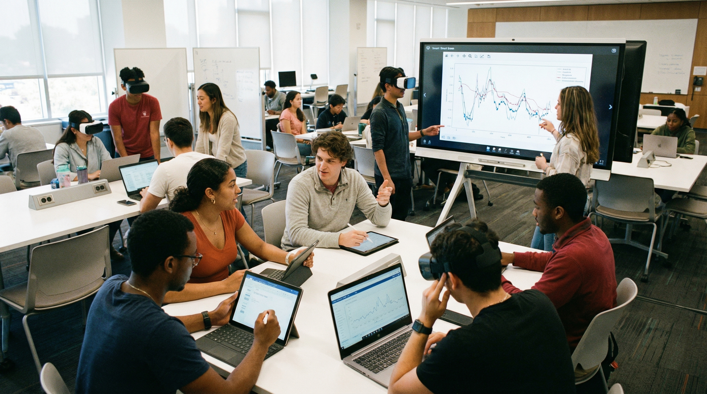
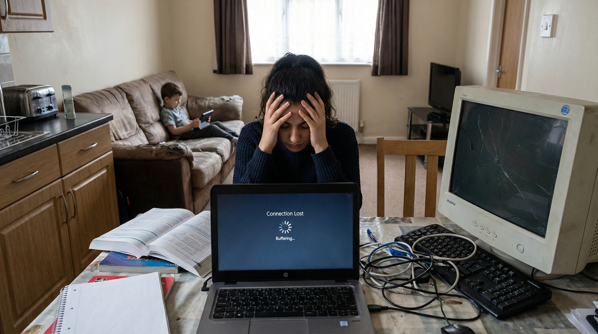
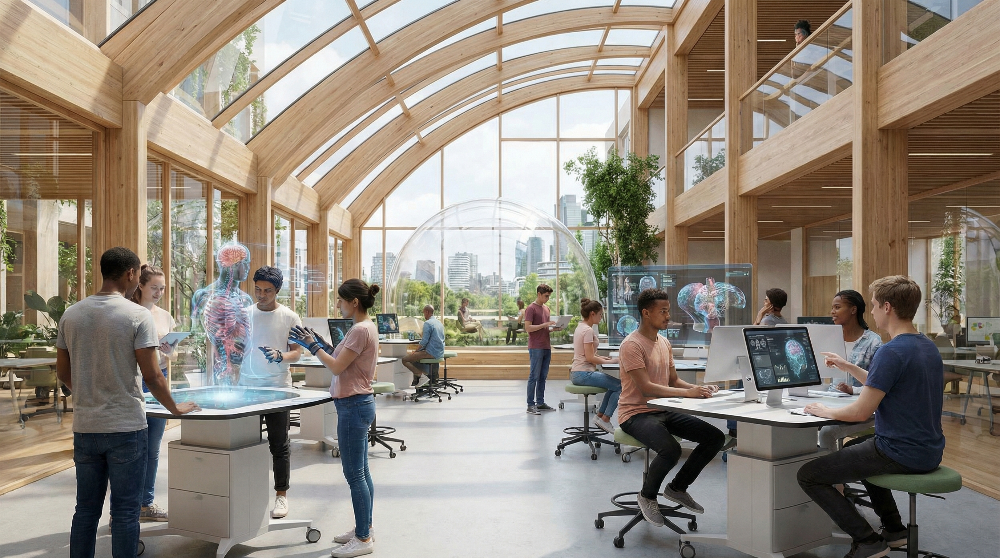

The Rise of Digital Learning
Introduction
Digital learning has become one of the most important parts of modern education. It refers to the use of technology such as laptops, tablets, smartphones, online platforms, and digital resources to support teaching and learning. In today’s world, digital tools are helping students access information more easily, communicate more effectively, and learn in more flexible ways.
Education is no longer limited to textbooks and classrooms alone. With the help of technology, students can now attend virtual lessons, complete online assignments, watch educational videos, and explore learning materials from anywhere. This has changed the way students study and the way teachers deliver knowledge.
Digital learning is closely connected to Sustainable Development Goal 4: Quality Education because it can make learning more accessible, engaging, and inclusive. When used effectively, technology can help more students gain the skills and opportunities they need for the future.
Digital Tools in Education

Many different digital tools are now used in education. These include online learning platforms, virtual classrooms, educational websites, video lessons, mobile apps, e-books, and interactive quizzes. These tools help students access learning materials quickly and make education more dynamic and interactive.
Learning management systems such as Google Classroom, Moodle, and Microsoft Teams are often used by schools and universities to organise assignments, share resources, and support communication between students and teachers. Video conferencing tools also allow students to participate in lessons even when they are not physically in class.
In addition, digital tools can support different learning styles. Some students learn better by reading, while others prefer visual explanations, videos, or interactive activities. Technology allows teachers to provide learning in multiple formats, which can make education more effective and engaging.
Benefits of Digital Learning
One of the biggest advantages of digital learning is flexibility. Students can often learn at their own pace, revisit difficult topics, and access educational materials whenever they need them. This can improve understanding and help students become more independent learners.
Another major benefit is accessibility. Digital platforms can make education available to students in different locations, including those who may not always have access to physical classrooms or traditional learning materials. Online resources can also support students who need extra revision or additional academic help.
Digital learning can also improve engagement. Interactive lessons, educational videos, quizzes, and multimedia content often make learning more interesting and easier to understand. Students are more likely to stay focused when learning feels practical, visual, and connected to modern life.
Finally, digital education helps students develop important 21st-century skills such as digital literacy, online communication, research ability, and independent problem-solving. These are valuable skills not only for academic success but also for future careers and lifelong learning.
Challenges of Digital Learning

Although digital learning has many benefits, it also comes with challenges. One major issue is unequal access to technology. Not all students have reliable internet, personal laptops, tablets, or quiet spaces to study. This creates a digital divide, where some students are able to learn more effectively than others simply because they have better resources.
Another challenge is distraction. Learning online can sometimes make it harder for students to stay focused, especially when social media, entertainment, or home responsibilities are nearby. Without strong time management and motivation, digital learning can become difficult to manage.
Some students and teachers may also struggle with digital confidence. Not everyone is equally comfortable using online tools, platforms, or software. This can slow down learning and make online education feel stressful rather than supportive.
In addition, spending too much time online can lead to screen fatigue, reduced concentration, and less face-to-face interaction. This means digital learning should be used in balanced and thoughtful ways to ensure students remain engaged and supported.
The Future of Learning

The future of education is likely to become even more connected to technology. As digital tools continue to improve, students may have access to smarter learning systems, personalised study platforms, virtual simulations, and more interactive educational experiences.
Technology can help make education more adaptable and more inclusive, especially when combined with good teaching practices and equal access. It has the potential to support lifelong learning and help students continue developing skills even beyond school or university.
However, the future of learning should not depend only on technology. It should also focus on fairness, accessibility, and meaningful support for students. Digital tools are most effective when they are used to enhance learning rather than replace human guidance and connection.
By using technology responsibly and inclusively, digital learning can play a major role in building a better educational future for everyone.
Conclusion
Digital learning has transformed education by making knowledge more accessible, flexible, and interactive. It allows students to explore new ways of learning, gain digital skills, and connect with information more easily than ever before.
At the same time, digital education also brings challenges such as unequal access, distractions, and the need for better support. These issues show that technology alone is not enough - it must be used fairly and effectively.
As education continues to evolve, digital learning will remain an important part of building inclusive and high-quality education systems. When used responsibly, it can support Sustainable Development Goal 4 and help create better learning opportunities for all.